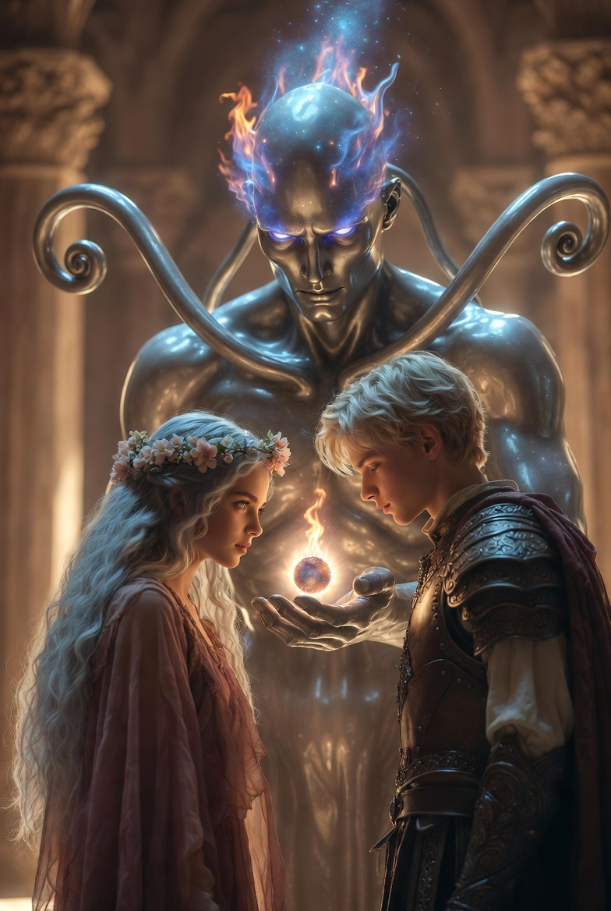

Ajánlom egy kedves barátomnak, aki keresi a pillanatban rejlő örökkévalóságot, és mer hinni a szív órájának szavában.
Az Emlékezet Palotája nem csupán egy hely volt; az volt a lét végtelen könyvtára, ahol a múlt szellemei suttogtak a porban, a jelen pedig csak egy pillanatnyi árnyékot vetett a falakra, amelyek valójában nem is falak voltak. Ehelyett a levegőben lebegő, áttetsző ködökben derengett a jövő: milliónyi lehetséges szál, amelyek még meg nem szőtt sorsokként vibráltak, akár a távolban felbukkanó viharfelhők, amelyek ígéreteikben rejtették a mennydörgést és a csendet egyaránt. Itt, ebben az üres, végtelen teremben, ahol a lépések visszhangja elveszett a semmiben, Honóra és Alerion álltak, kimerülten, de diadalmasan. Útjuk a hurkokon és csapdákon át vezetett idáig – azokon a végtelen ismétlődéseken, amelyekben a logika önmagába fordult, mint egy kígyó, ami a farkát falta –, és most, a Tiszta Valóság hideg érintése után, a felejtés ködös öleléséből ébredve, készen álltak az alkotásra.
A terem közepén trónolt a Sors Kovácsa, egy monumentális alak, aki nem ember volt, sem isten, hanem valami köztes: egy ezüstös óriás, akinek teste folyékony fémből formálódott, mintha a csillagok könnyei öntötték volna ki. Karjai hosszúak és ízesek voltak, akár a galaxisok spirális ágai, és amikor mozdult, a bőre alatti erekben felizzottak a csillagok – apró, pulzáló fénygömbök, amelyek hullottak a kezéből, mint perzselt emlékek. Szemei nem villantak, hanem tartósan égtek, mélykék lánggal, amelyben minden lehetséges végzet tükröződött. Ő volt az, aki a szálakat fonta, de most átadta a szerszámot nekik, mert a sors kovácsa soha nem alkot egyedül; mindig kell hozzá egy szikra a halandókból.
Átnyújtotta nekik a Lélek-tüzet: egy kis, lüktető gömböt, amely nem égetett, de meleget árasztott, akár egy szív, ami soha nem áll meg. A tűz színei váltakoztak – aranyló sárga a reménytől, mélyvörös a szenvedélytől, és halványkék a bölcsességtől –, és érintésekor Honóra érezte, ahogy a saját ereiben felébred valami ősi, elfeledett erő. Alerion keze remegve simult rá, mintha félne, hogy a tűz elolvassa a gondolatait, de tudta, hogy ez a pillanat az övék: a megváltásé, amit annyi megpróbáltatás után kaptak.

– Itt van – zúgta a Kovács, hangja mélyen rezgett, mint a föld mélyéből jövő visszhang, amely egyszerre volt parancs és áldás. – Megjártátok a hurkot, a logikai csapdákat, a Tiszta Valóságot és a felejtést. Most tiétek a hatalom, hogy alkossatok valamit, ami nem ismétli önmagát, és nem is pusztul el a céltalan időben. Mi lesz az alapköve?
A szavak a levegőben lógtak, nehéz súllyal, akár a bilincsek, amelyekről most szabadultak. Honóra és Alerion egymásra néztek. A halhatatlanságuk fényében – az a ragyogás, amit a Tiszta Valóság ajándékozott nekik, ahol a testük kristályosodott, de a lelkük szárnyalt – minden mozdulatuk lassú és fenséges volt, mintha az idő maga hajolt volna meg előttük. Honóra haja, amely mostanra ezüstfolyamként omlott vállára, finoman hullámzott a terem láthatatlan szeleiben, szemeiben pedig még mindig ott csillogott a felejtés könnye, amitől bölcsebbé vált. Alerion arcán, amely régen sebhelyekkel volt tele a harctól, most béke ült, de a szemeiben ott bujkált a régi tűz, a vándorként szerzett alázat, ami sosem hagyta el őket teljesen. Két szál, ami összefonódott a végtelen hurokban, és most szabadon szőhettek.
– Nem várat akarunk – kezdte Alerion, miközben az ujjait a Lélek-tűzbe mártotta. Az érintés nem fájt, hanem áramlott belé a meleg, mint egy régi emlék, ami felmelegíti a csontokat. Hangja erős volt, de benne remegett a bizonytalanság, mert tudta, hogy ez a pillanat meghatározza nem csak a szigetet, hanem az egész új világot. – A várak falai elválasztanak. Mi egy olyan helyet akarunk, ahol a falak kapukká válnak.
A szavai visszhangoztak a teremben, és a vibráló jövő szálai mintha figyelnének: néhány megremegett, mintha helyeselnének, mások elsötétültek, mintha figyelmeztetnék a veszélyre. Alerion elképzelte azt a helyet – nem kőfalakat, hanem íves kapukat, amelyek nemcsak beengednek, hanem ki is engednek, ahol a határ nem korlát, hanem meghívás. Ez volt a lényeg: a szabadság, amit ők maguk soha nem ismertek igazán, mert a hurkok mindig visszahúzták őket.
– Nem akarunk örök napsütést sem – tette hozzá Honóra, hangja lágyabb, de határozottabb, mint Alerioné, mintha a szél suttogna vihart. Közelebb hajolt a tűzhöz, ujjai táncoltak a lángok fölött, és érezte, ahogy a változás íze – keserédes, mint az eső utáni föld – betölti a száját. – Mert árnyék nélkül nem látnánk a fényt. Az új világunk alapköve a Változás lesz.
A Kovács bólintott, csillagok hullottak a vállára, mint elismerésül. A Változás – ez a szó szinte élővé vált a levegőben, egy harmadik jelenlévővé, aki mosolyogva figyelte őket. Honóra gondolatban már látta: napok, amikor a nap süt, de estére vihar jön, hogy megújítsa a földet; folyók, amelyek hol duzzadnak, hol apadnak, de soha nem állnak meg; emberek – ha lesznek emberek –, akik nem rabszolgái a sorsnak, hanem társszerzői. Ez nem ismétlés volt, nem pusztítás, hanem egyensúly: a körforgás, ami előrevisz.
Elkezdték szőni az új szigetet a semmi közepén. A Lélek-tűz a kezükben égett, és ők irányították, mint két szövőasszony a végtelen gobelinen. Először csak egy pontot alkottak: egy apró szikrát a végtelen űrben, ahol a semmi hullámzott, mint egy álomtenger. De ez volt a legnehezebb logikai feladat, amivel valaha szembeültek: hogyan alkossanak valami állandót, ami mégis folyamatosan változik? Alerion a tűz egy részét a talajba nyomta, ahol kövek nőttek ki, de nem merev gránitok, hanem élő kőzetek, amelyek lassan formát váltottak – egyik pillanatban tornyok, a másikban erdők. Honóra a levegőbe fújta a lángot, és abból szárnyak keltek, madarak, amelyek nem egy formát vettek fel, hanem átváltoztak: sólyom egy pillanatra, majd pillangó, hogy megporozzák a még nem létező virágokat.
Órákig, vagy talán napokig tartott – az idő itt elvesztette jelentését –, és közben vitatkoztak, nevettek, kételkedtek. "Ha túl merev, megismétlődik" – mondta Alerion, amikor egy folyómeder túl egyenesre sikeredett, és ők újraolvasztották, hogy kanyargos ösvénnyé váljon. "Ha túl laza, elszivárog a semmi felé" – válaszolta Honóra, miközben árnyékokat szőtt a fák alá, hogy a fény ne legyen vakító, de ne is fullasztó. A sziget formálódott: dombok emelkedtek, ahol völgyek süllyedtek; tenger vette körül, de a hullámok nem tomboltak vakon, hanem ritmusosan táncoltak, akár egy szívverés. Középen egy központi fa nőtt ki, a Változás fája, amelynek levelei mindig más színben pompáztak, gyökerei pedig mélyen hatoltak a sziget szívébe, ahol a Lélek-tűz pulzált, örök szikraként.
Amikor végül megálltak, lihegve, izzadtan – bár a halhatatlanságukban már nem tudtak izzadni –, a sziget ott lebegett előttük: a Szabad Sziget, ahol a kapuk mindig nyitva álltak, a fény és árnyék ölelkezett, és minden dologban ott bujkált a változás ígérete. A Kovács elmosolyodott, csillagai felragyogtak, és a jövő szálai körülöttük összefonódtak, új hurkok nélkül. De ők tudták: ez csak a kezdet. A sziget élni fog, változni fog, és velük együtt szőni tovább a sorsot – szabadon, végre szabadon.
A szövés nem állt meg a szikránál; a Lélek-tűz tovább égett a kezükben, és most már nem csak formákat, hanem törvényeket faragtak belőle – azokat a láthatatlan szálakat, amelyek tartották a szigetet, mint egy óriási háló a vihar ellen. Ezek a törvények nem parancsok voltak, hanem dallamok, amelyek a Változás ritmusára táncoltak, finoman emlékeztetve mindenkire, hogy a szabadság nem káosz, hanem harmónia a káoszban. Három törvény született így, mindegyikükből áradva a két teremtő esszenciája: Alerioné a tűz és a folyás, Honoré a szél és a ciklus. A Sors Kovácsa figyelte őket némán, csillagai lassan hullottak, mintha tapsolna a sötétben.
A Megismerés Folyója: Alerion egy folyót kanyarított a sziget közepére, amelynek vize nem a tengerbe, hanem a tudásba ömlött. Nem egyszerű patak volt ez, hanem egy élő ér, amely a sziget szívéből fakadt, ahol a Változás fája gyökerei összefonódtak a föld mély rétegeivel. A víz színe hol mélykék volt, mint az éjszakai ég, hol aranyszínű, mint a hajnal első sugarai, és soha nem állt meg: hömpölygött, kacagott a köveken, suttogott a nádasban, ahol a levelek finoman rezegtek, mintha titkokat hallgatnának. Alerion ujjai még mindig viszkettek a tűz érintésétől, amikor megformázta; emlékezett a saját vándorlásaira, azokra az éjszakákra, amikor a hurkokban csak kérdések kínozták, válaszok nélkül. "Nem elég tudni" – mormolta magában, miközben a folyót a sziget ereiben terítette szét, akár egy hálót, ami nem fog, hanem vezet. Aki ivott belőle – legyen az vándor vagy későbbi lakó –, nem válaszokat kapott, hanem jobb kérdéseket. Az ivás után a világ élesebbé vált: a fák árnyékaiban rejtett formákat láttak, a szél suttogásában történeteket, és a saját szívükben olyan kíváncsiságot, ami nem pihent, hanem hajtott előre. Egyetlen korty, és a "miért?" nem fenyegetés lett, hanem kulcs; a folyó pedig hálásan csobogott, mintha megköszönné, hogy valaki végre hallgatja.
Az Évszakok Tánca: Honóra nem rögzítette a harmincadik napot. Ehelyett megalkotta az Évszakok Táncát, de nem naptár szerint, hanem a lakók érzelmei szerint. Ő, aki a Tiszta Valóságban tanulta meg az idő illékonyságát, ahol a pillanatok kristályai törtek szét a kézben, most a sziget levegőjét szőtte át láthatatlan szálakkal: finom, rezgő hálóval, ami a szíveket figyelte, akár egy anya a gyermeke álmát. A tánc nem lineáris volt, hanem örvénylő, akár egy forgószél, ami hol lassan hömpölygött, hol felgyorsult a szenvedélytől. Ha a szigeten öröm volt – nevetés a tűz körül, karok összefonódása a parton –, tavasz illata szállt: friss fű, virágpor, amit a szél szállított a folyó mentén növő kertekbe, ahol a rügyek egyik pillanatról a másikra kinyíltak, színek kavalkádjában. Ha melankólia telepedett rá – elveszett emlékek súlya, vagy a távozás keserűsége –, arany barna levelek hullottak: nem hirtelen viharban, hanem lassan, kecsesen, akár könnyek, amelyek a földet táplálják, és másnap reggelre új hajtások törnek elő. Nyár idején a nap sugarai forrón simultak a bőrre, de csak addig, amíg a vágy lángolt; őszén a gyümölcsök édesen hullottak, ha a bölcsesség érett meg. Honóra mosolygott, miközben a táncot szőtte, mert tudta: ez a törvény nem kényszerít, hanem tükröz – emlékeztet a lakókra, hogy érzelmeik formálják a világot, és a világ visszasúgja nekik a saját dallamukat.
A Választás Hegye: A sziget legmagasabb pontján nem trón állt, hanem egy ösvény, amely kivezetett a szigetről. Senki sem volt fogoly. Aki megérkezett, bármikor továbbmehetett. Ez a hegy nem meredek sziklafalakból emelkedett, hanem lágyan ívelő gerincből, ahol a kövek simák voltak a szél simogatásától, és a csúcsról nem zászlók lobogtak, hanem madarak szálltak fel, irányt mutatva a távolba. Alerion és Honóra együtt faragták: egyikük a talajt erősítette meg, hogy ne omoljon össze a lépések alatt, másikuk pedig a horizontot nyitotta meg, ahol a köd feloszlott, és láthatóvá váltak a többi világ körvonalai – távoli szigetek, ahol a hurkok még mindig foglyul ejtették a lelkeket. A hegy oldalán pihenőhelyek húzódtak meg: kövek, amelyek emlékeket őriztek azoknak, akik elbúcsúztak, és virágok, amelyek csak akkor nyíltak ki, ha valaki döntött. "A szabadság nem ajándék" – mondta Alerion, miközben az ösvény végét egy kapuval zárta, ami soha nem csukódott be. "Hanem választás, amit minden lépéssel megújítunk." Aki feljutott, érezte a szelet, ami nem taszított, hanem hívogatta: "Maradj, ha akarsz; menj, ha kell." És a hegy csendje válaszolt: semmivel sem többel, sem kevesebbel.
Ahogy a sziget (amit elneveztek Új-Hajnalnak) lassan megszilárdult alattuk, a halhatatlanságuk már nem elszigetelt isteni magányt jelentett. A törvények életre keltek: a folyó csobogott, az évszakok váltakoztak a még üres utcák felett, a hegy csendben őrködött. A Lélek-tűz most már a sziget szívében pulzált, finom izzással, ami éjszaka lámpásként ragyogott a távolból. Új-Hajnal nem volt statikus paradicsom; élt, lélegzett, változott – dombok emelkedtek, ahol völgyek mélyültek, fák hajtottak új ágakat a szél vágyától. És a sziget elkezdte vonzani a többi vándort a semmiből. Olyanokat, akik eltévedtek az időben, vagy akik belefáradtak saját világuk kőbe vésett szabályaiba. Először csak árnyékok voltak a horizonton: ködös alakok, akik a tenger hullámain ringatóztak, hajóik rongyos vitorlái alatt. Aztán kikötöttek – fáradt arcok, szemekben a hurkok emléke, kezükben tárgyak, amik idejükből ragadtak: egy régi óra, ami megállt, egy könyv, amelynek lapjai sárgultak a felejtéstől. Ők jöttek a semmiből, mert Új-Hajnal fénye – az a finom, hívogató ragyogás – átsütött a réseken, ahol a régi világok repedtek.
– Nézd – suttogta Alerion, ahogy az első vándor-hajó kikötött az új kikötőben. A nap éppen lenyugodott, vörösre festve a vizet, és a hajó deszkái nyikorogva simultak a parthoz, ahol a hullámok finoman simultak, akár egy meghívás. Az utasok leszálltak: egy öregasszony botjával tapogatózva, egy fiatalember, akinek szemei még mindig a múlt árnyait keresték, és egy gyermek, aki nevetve rohant a homokba. Alerion szíve összeszorult a látványtól – nem félemtől, hanem örömtől, mert végre nem egyedül voltak. – Ők nem tudják, hogy mi teremtettük ezt.
Honóra mellette állt, haja a szélben hullámzott, szemeiben a folyó kékje csillogott. Megfogta a kezét, ujjai melegen simultak, mint a tűz emléke. – És ne is tudják – felelte Honóra. – Ne isteneket lássanak bennünk, hanem társakat. Ők jöttek, hogy újrakezdjék, mi pedig... mi csak a szálakat fontuk. Legyenek egyenlők a táncban.
Azonban a teremtés pillanatában valami megmozdult a palota sötét sarkaiban. Az Emlékezet Palotája, ami eddig vibráló jövőkkel telt meg, most megremegett: a ködök elsötétültek, mintha egy kéz húzta volna elő a függönyt, és a távolban, a végtelen térben, árnyak mozdultak meg – nem véletlenek, hanem öreg, éhes erők, amelyek a stagnálásból táplálkoztak. A Sors Kovácsa elhallgatott, és a tekintete a távolba révedt. Az óriás teste megfeszült, ezüst bőre alatt a csillagok idegesen villóztak, mintha vihart éreznének. Hangja most nem zúgás volt, hanem mély morgás, ami a csontokat rezgette: – Vigyázzatok – figyelmeztetett az óriás. – Ahol új fény születik, ott a Régi Sötétség is felébred. Azok az erők, amik a hurkokból és a stagnálásból táplálkoztak, nem nézik jó szemmel a ti Szabad Szigeteteket. Ők a fagyot szeretik, a mozdulatlan kört, ahol minden ismétlődik örökké. A változás számukra méreg, és most, hogy ti megtörtétek a kört, felébresztették őket.
Alerion a tőrére pillantott, ami most már nem pusztán acél volt, hanem a halhatatlan akaratának kiterjesztése. A penge finoman izzott a hüvelyben, akár egy újabb szikra a tűzből, élei nem vágtak, hanem emlékeztek: minden sebhelyre, amit a hurkokban szerzett, minden döntésre, ami a szabadság felé vezetett. Kezében tartotta, de nem emelte fel; csak mosolygott, szemeiben a folyó tükröződött. – Hadd jöjjenek. Már tudjuk, hogy a rend nem a fagyott állapot, hanem a folyamatos egyensúlyozás. Ha jönnek, táncolni fogunk velük – nem harcolni, hanem változtatni. Mert Új-Hajnal nem várja a sötétséget; átalakítja.
A palota visszhangzott a szavaitól, és a jövő szálai újra felragyogtak, de most már árnyékokkal keveredve. A sziget távolról hívta őket vissza, a vándorok nevetése eljutott a széllel, és Honóra bólintott, kezét Alerion vállára téve. A teremtés nem ért véget; csak most kezdődött el igazán, a fény és árnyék első táncával.